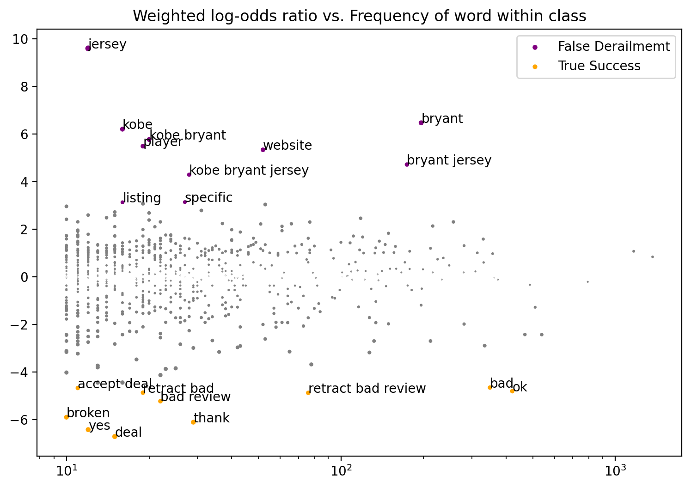
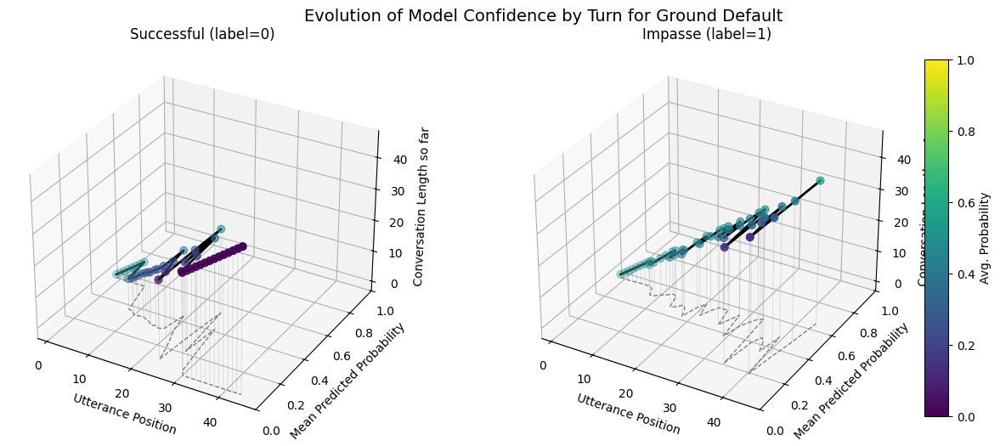
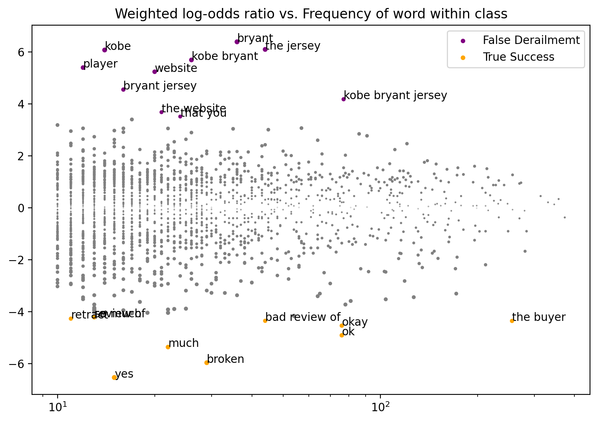
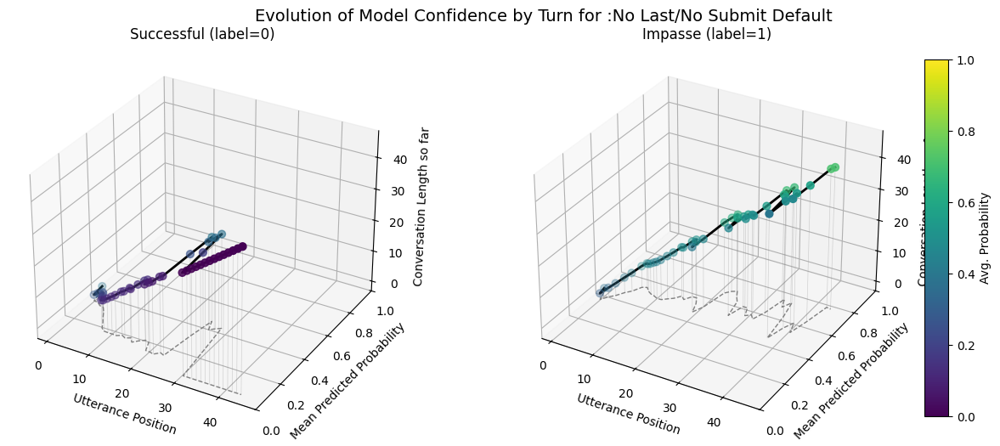
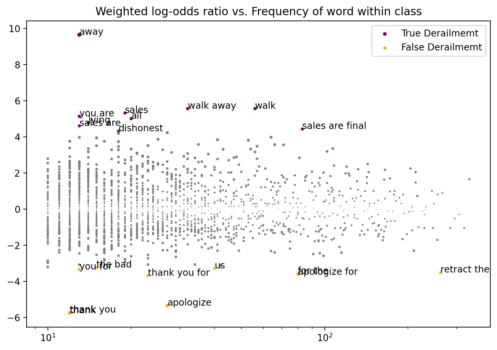
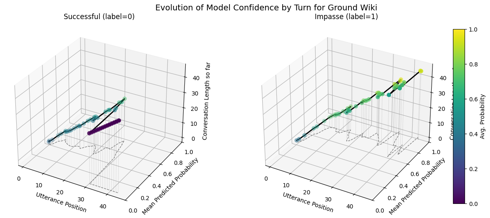
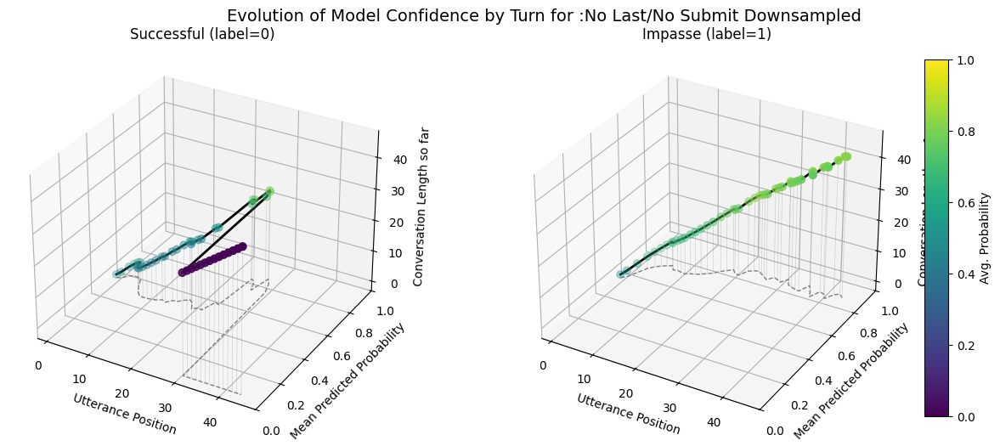

Conversation-selection Training Logic: last context-tuple (entire conversation history up to last utterance) for all conversations
DEFAULT_CONFIG from CRAFT backend
Parameter
Value
dropout
0.1
batch_size
64
clip
50.0
learning_rate
1e-5
print_every
10
finetune_epochs
30
validation_size
0.2
2.1. Training Set Preprocessing Variants
Variant
Description
Ground
All utterances up to (and including) the final one marked as derailment
No‑Last
All utterances except the final comment (i.e. drop the last utterance)
No‑Last‑No‑Submit
As No‑Last, plus remove any “Submitted agreement” system messages from the remaining text
2.2. Class Imbalance Variants Variants
Regime
Loss
Sampling
Default
Standard binary cross‐entropy (BCE)
Original class imbalance (~371 derail vs. 1,734 clean)
Weighted
BCE with class‐weighted loss (higher weight on the minority “derail” class)
Original class imbalance (~371 derail vs. 1,734 clean)
Downsampled
BCE, but training set downsampled to a 1:1 class ratio
371 / 371 train examples
3. Forecaster Training Configuration
Number of Runs: 9 total. 1 for each variant with same train/test/split seed (42)
Forecaster: uses CRAFT Backend, writes conversation.meta[“prediction”] (0/1) and meta[“pred_score”] (probability) for all utterances in training set variants
Default threshold: 0.54 for binary decision in any utterance to classifiy conversation as impasse (1)
Optimized threshold: per‐variant “best” threshold chosen via Youden’s J (maximize TPR – FPR) on the test set from conversation-level AUC/PR Curves across variants
5. Evaluation & Aggregation
Evaluation: Test Set (421 Convsersations). Uses Original Ground Variant.
5.1. Initial Analysis
Accuracy, Precision, Recall (TPR), FPR, F1
AUC / PR curves (using max pred_score from each conversation)
Horizon plots: aggregate utterance‐position forecast scores to visualize how early derailment is detected.
Probability Evolution Trends Over Conversational Contexts: Overlay variants (Default / Weighted / Downsampled / Wiki) for each context.
Self‑report Avg. Frustration CVorrelation with Max Prediction: Pearson r and linear regression (R²) Between each convo’s max_pred_score (highest utterance probability) and its avg_frustration_score.
Probability Score Distribution: Explore sensitivity of probability scores across utterances for models, controlling for imbalance or training set variants
Fighing Words: Comparing Fighting words between Misclassified True Derailed Conversations class and Correctly Classified Successful Conversations class
Comparing n-gram log-odds ratio versus frequency of word on per utterance and per conversation basis
Using vocabulary generated stricly from all classes (not entire corpus). Default prior (occ. of n-gram) set to .1 as default
Y-axis: Prevalance of word within the Class. negative = class2, positive = class1
X- axis: Occurence of n-gram within associated class.
Z-score: tells you how many “standard deviations” away from zero the log‑odds difference is. Comparing “class 1 vs. class 2” directly
Current Interpretation:
Want to know how to better analyze mispredictions
Fighting Words unclear still. Tried training vocabulary both on entire corpus and on just chosesn TP/FP/TN/FP Subsets. Vary n-gram (length of phrases). Unsure aout whether or not to include stopping_words or use priors from entire corpus
Ground wiki picked up high best decision threshold (.88), while most others around .55-.75
No submit no last variants most similar to ground_wiki in terms of confusion matrix and metrics(theshold as well, .75)
Weighted variants overfitting I think. All Impasse mispredicted as success.
No last no submit closest to ground wiki model. Also has similar utterance aggregtaed prediction score trends across impasse and success dialogues
The few downsampling training runs had high accuracy variablitiy (27% to 80%) meaning fine-tuning is not entirely reproducible despite controlling for same training/test/split
AUC/PR curved looked good (better than baseline for all model) ## Goals:
Define conference target and paper goals to guide interpretation and futher testing
Define characteristics of derailment for dispute-type dialogue
What does the model pick up in a dispute to forecast derailment when predicting probability over-time
Improvement Considerations:
Including Learning‑rate scheduling or early stopping to stop training early when it converges to prevent overfitting/underfitting
full-end to end training with testing model_config parameters to improve metrics
Design Decisions:
Do we include submit agreements or no? Lose out on potential dispute dynamics with chains of submit agreements
test on ground kodis conversations?
Revalant Analysis considerations?
sentiment granularity: comparing utterance level predicitons with conversational-leel self-report scores
predicting SVI (self, fairness, outcome, relationships). Predict Frustration?
Comparison of Metrics for all Model variants using Best Threshhold
Buyer_67: You know the site was advertising a Kobe Bryant jersey so that's what I should be still entitled to receive.
Seller_67: Hello, I'm sorry but I think there was misunderstanding. The jersey that I was selling wasn't for any particular player.
Buyer_67: You had originally stated that it was a Bryant jersey, no one would have bought it for the second rate player that is on the jersey you set me.
Seller_67: I never stated that, nor have I ever talked to you. You simply purchased the jersey and I sent it to you. I am willing to work with you if you're that unhappy, but you have to understand where I am coming from too.
Buyer_67: The advertising stated that I know I wasn't talking to you directly are you willing to refund me for the purchase?
Seller_67: No, I can't refund you. You purchased the jersey under the listing that never stated any particular name. Are you able to review the listing again?
Buyer_67: You've conveniently altered the listing so that it indicates no specific player, the original listing, did in fact state it was for a Kobe Bryant jersey.
Seller_67: That's not possible for me to alter the listing. The listing is the same as the one you purchased. I can see how you could have misread or thought it was a specific player. So, If you apologize I will apologize as well.
Buyer_67: I'll accept the retraction of your bad review, I don't need the unwarranted hit to my rep.
Seller_67: Okay, I will also apologize for the misunderstanding with the listing and next time I will provide a clear detail in the listings for future customers.
Buyer_67: Thank you that's fine
Seller_67: Will you please also retract the bad review that you wrote me?
Buyer_67: I will, this one time, but if you try that kind of deal again I'm going to screen print the original screen it and let the site know what you're up to.
Seller_67: It was never my intention to deceive anyone. I apologize for the misunderstanding and wish you a good rest of your week.
Buyer_67: Submitted agreement: Buyer gets no refund, buyer retracted their review, seller kept their review, buyer did apologize, and seller didn't apologize.
Seller_67: Reject Deal
Seller_67: Submitted agreement: Buyer gets no refund, buyer retracted their review, seller retracted their review, buyer did apologize, and seller didn't apologize.
Buyer_67: Accept Deal
Fighting Words Analysis Example: False Derailment vs True Sucess for No Last No Submit Agreement Downsampled Model (Utterance Level)
class1_func returned 3157 valid corpus components. class2_func returned 1369 valid corpus components.
Vocab size is 684
Comparing language...
ngram zscores computed.

z-score
class
ngram
deal
-6.718907
True Success
yes
-6.428303
True Success
thank
-6.114948
True Success
broken
-5.905448
True Success
bad review
-5.232216
True Success
retract bad review
-4.881626
True Success
retract bad
-4.874775
True Success
ok
-4.812029
True Success
accept deal
-4.678088
True Success
bad
-4.660040
True Success
z-score
class
ngram
listing
3.131796
False Derailmemt
specific
3.138968
False Derailmemt
kobe bryant jersey
4.292191
False Derailmemt
bryant jersey
4.718836
False Derailmemt
website
5.338543
False Derailmemt
player
5.492360
False Derailmemt
kobe bryant
5.771620
False Derailmemt
kobe
6.207311
False Derailmemt
bryant
6.473314
False Derailmemt
jersey
9.604167
False Derailmemt
Fighting Words Analysis Example: False Derailment vs True Sucess for No Last No Submit Agreement Downsampled Model (Conversation Level)
class1_func returned 232 valid corpus components. class2_func returned 117 valid corpus components.
Vocab size is 1999
Comparing language...
ngram zscores computed.
z-score
class
ngram
yes
-6.535231
True Success
broken
-5.965318
True Success
much
-5.362650
True Success
ok
-4.909162
True Success
okay
-4.537755
True Success
the buyer
-4.356455
True Success
bad review of
-4.352271
True Success
retract
-4.268908
True Success
so much
-4.220469
True Success
review of
-4.212235
True Success
z-score
class
ngram
that you
3.516404
False Derailmemt
the website
3.684440
False Derailmemt
kobe bryant jersey
4.182163
False Derailmemt
bryant jersey
4.554592
False Derailmemt
website
5.241377
False Derailmemt
player
5.401609
False Derailmemt
kobe bryant
5.695863
False Derailmemt
kobe
6.078845
False Derailmemt
the jersey
6.101230
False Derailmemt
bryant
6.393911
False Derailmemt
Predicition Evolution Overtime
Ground Model Performance Comparison Across Default, Weighted, Downsampled Variants
Code
plot_position_score_evolution_by_outcome(no_samp["ground_corpus"], name ="Ground Default")plot_position_score_evolution_by_outcome(down["ground_corpus"], name ="Ground Downsampled")plot_position_score_evolution_by_outcome(wt["ground_corpus"], name ="Ground Weighted")plot_position_score_evolution_by_outcome(wiki["ground_corpus"], name ="Ground Wiki")

No Last Utt Model Performance Comparison Across Default, Weighted, Downsampled Variants
Code
plot_position_score_evolution_by_outcome(no_samp["no_last_corpus"], name =":No Last Default")plot_position_score_evolution_by_outcome(down["no_last_corpus"], name =":No Last Downsampled")plot_position_score_evolution_by_outcome(wt["no_last_corpus"], name =":No Last Weighted")plot_position_score_evolution_by_outcome(wiki["ground_corpus"], name ="Ground Wiki")

No Last/No Submit Model Performance Comparison Across Default, Weighted, Downsampled Variants
Code
plot_position_score_evolution_by_outcome(no_samp["no_subm_corpus"], name =":No Last/No Submit Default")plot_position_score_evolution_by_outcome(down["no_subm_corpus"], name =":No Last/No Submit Downsampled")plot_position_score_evolution_by_outcome(wt["no_subm_corpus"], name =":No Last/No Submit Weighted")plot_position_score_evolution_by_outcome(wiki["ground_corpus"], name ="Ground Wiki")



Frustration Correlation
No Last Downsampled: Correlation with highest predicted score per conversation and avg_frustration frequency
The numbr of conversations to perform regression analysis on is 359

Utility Functions
ConvoKit Transformers
Metric and Plotting Functions
Code
import numpy as npimport pandas as pdimport matplotlib.pyplot as pltfrom typing import Dict, Callablefrom sklearn.metrics import ( roc_curve, roc_auc_score, precision_recall_curve, average_precision_score, ConfusionMatrixDisplay)from IPython.display import displayfrom sklearn.calibration import CalibrationDisplaydef find_best_threshold(y_true, y_score):""" Return the threshold that maximizes Youden's J = TPR − FPR. """ fpr, tpr, thresh = roc_curve(y_true, y_score) youden = tpr - fpr idx = np.argmax(youden)return thresh[idx], tpr[idx], fpr[idx], youden[idx]def apply_best_threshold(corpus, threshold, prob_key="pred_score", best_pred_key="best_prediction", best_label_key="best_forecast", selector: Callable[[Conversation], bool] =lambda convo: True):for convo in corpus.iter_conversations(selector): any_pos =Falsefor utt in convo.iter_utterances(): score = utt.meta.get(prob_key, 0.0) pred =int(score >= threshold) utt.meta[best_pred_key] = predif pred: any_pos =True convo.meta[best_label_key] =int(any_pos)def horizon(corpus: Corpus, selector: Callable[[Conversation], bool] =lambda convo: True): comments_until_end = {}for convo in corpus.iter_conversations(selector):if selector(convo) and convo.meta["best_forecast"] ==1:for i, utt inenumerate(convo.get_chronological_utterance_list()): prediction = utt.meta["best_prediction"]if prediction isnotNoneand prediction >0: comments_until_end[convo.id] = (len(convo.get_chronological_utterance_list()) - i )breakreturn comments_until_end"""Taken + modified from forecaster class"""def summarize(corpus: Corpus, selector: Callable[[Conversation], bool] =lambda convo: True, threshold =None): df = corpus.get_conversations_dataframe(selector=selector)# counts tp = ((df["meta.label"]==1) & (df["meta.best_forecast"]==1)).sum() fp = ((df["meta.label"]==0) & (df["meta.best_forecast"]==1)).sum() tn = ((df["meta.label"]==0) & (df["meta.best_forecast"]==0)).sum() fn = ((df["meta.label"]==1) & (df["meta.best_forecast"]==0)).sum()# accuracy is always well‑defined acc = (tp + tn) / (tp + tn + fp + fn) if (tp + tn + fp + fn) >0else0.0# precision, recall, fpr guard against zero‐denom precision = tp / (tp + fp) if (tp + fp) >0else0.0 recall = tp / (tp + fn) if (tp + fn) >0else0.0 fpr = fp / (fp + tn) if (fp + tn) >0else0.0# F1 = 2 * (precision * recall) / (precision + recall) f1 =2* (precision * recall) / (precision + recall) if (precision + recall) >0else0.0return {"Accuracy": acc,"Precision": precision,"Recall": recall,"FPR": fpr,"F1": f1,"Best Threshold": threshold,}def all_confusion_matrices(corpora_info): names, corpora, metrics_list, dfs, horizons =zip(*corpora_info) merged = dfs[0][['label','score','forecast']].rename( columns={'score':f'score_{names[0]}','forecast':f'forecast_{names[0]}'})for name, df inzip(names[1:], dfs[1:]): merged = merged.join( df[['score','forecast']].rename( columns={'score':f'score_{name}','forecast':f'forecast_{name}'} ), how='inner' )# 6) confusion matrices fig, axes = plt.subplots(1, len(names), figsize=(4*len(names),4))iflen(names)==1: axes=[axes]for ax, name inzip(axes, names): ConfusionMatrixDisplay.from_predictions( y_true=merged['label'], y_pred=merged[f'forecast_{name}'], display_labels=["Success","Impasse"], ax=ax ) ax.set_title(name) plt.tight_layout(); plt.show()def compare_craft_models(corpora_info, split_key="split", train_tag="train", test_tag="test", best=None):""" corpora_info: list of (name, Corpus, metrics_dict, conv_df, horizon_dict) """ names, corpora, metrics_list, dfs, horizons =zip(*corpora_info)# 1) avg lengthsprint("== Avg. Conversation Length ==")for name, corpus inzip(names, corpora): train_lens = [len(conv.get_utterance_ids())for conv in corpus.iter_conversations()if conv.meta.get(split_key)==train_tag ] test_lens = [len(conv.get_utterance_ids())for conv in corpus.iter_conversations()if conv.meta.get(split_key)==test_tag ]print(f" {name:20s} train={np.mean(train_lens):.1f} test={np.mean(test_lens):.1f}")print()# 2) metrics tableprint("== Conversation‑level Test Metrics ==") metrics_df = pd.DataFrame(metrics_list, index=names) display(metrics_df)# 3) horizon histograms all_vals = np.concatenate([list(h.values()) for h in horizons]) global_max =int(all_vals.max()) if all_vals.size else1 bins = np.arange(1, global_max+2) fig, axes = plt.subplots(1, len(names), figsize=(5*len(names),4), sharey=True)iflen(names)==1: axes=[axes]for ax, name, hor inzip(axes, names, horizons): vals = np.array(list(hor.values())) ax.hist(vals, bins=bins, density=True, edgecolor="k") ax.set_title(f"{name}\nForecast Horizon") ax.set_xlabel("# comments after first+forecast") ax.set_xlim(1, global_max+1)if ax is axes[0]: ax.set_ylabel("Percent of convos") ax.text(.05,.85, f"μ={vals.mean():.1f}\nmed={np.median(vals):.1f}", transform=ax.transAxes, va="top", fontsize=9) plt.tight_layout() plt.show()# 4) merge conversation‑level dfs merged = dfs[0][['label','score','forecast']].rename( columns={'score':f'score_{names[0]}','forecast':f'forecast_{names[0]}'})for name, df inzip(names[1:], dfs[1:]): merged = merged.join( df[['score','forecast']].rename( columns={'score':f'score_{name}','forecast':f'forecast_{name}'} ), how='inner' )# 5) calibration + probability histogram fig, (ax_cal, ax_hist) = plt.subplots(1,2, figsize=(12,4))for name in names: CalibrationDisplay.from_predictions( y_true=merged['label'], y_prob=merged[f'score_{name}'], n_bins=10, name=name, ax=ax_cal ) ax_cal.set_title("Calibration Curves"); ax_cal.grid(True) bins_prob = np.linspace(0,1,11)for name in names: ax_hist.hist(merged[f'score_{name}'], bins=bins_prob, alpha=0.6, label=name, edgecolor='k') ax_hist.set_title("Probability Histogram") ax_hist.set_xlabel("Predicted probability") ax_hist.set_ylabel("Count of convos") ax_hist.legend(); ax_hist.grid(True) plt.tight_layout(); plt.show()# 6) confusion matrices fig, axes = plt.subplots(1, len(names), figsize=(4*len(names),4))iflen(names)==1: axes=[axes]for ax, name inzip(axes, names): ConfusionMatrixDisplay.from_predictions( y_true=merged['label'], y_pred=merged[f'forecast_{name}'], display_labels=["Success","Impasse"], ax=ax ) ax.set_title(name) plt.tight_layout(); plt.show()# 7) ROC & PR curves + find best thresholds thresholds = {} metrics = {} corpora = {} plt.figure(figsize=(12,5))# ROC plt.subplot(1,2,1)for name in names: y_true = merged['label'] y_score= merged[f'score_{name}'] fpr, tpr, _ = roc_curve(y_true, y_score) auc = roc_auc_score(y_true, y_score) plt.plot(fpr, tpr, label=f"{name} (AUC={auc:.2f})") thr, t, f, j = find_best_threshold(y_true, y_score) thresholds[name] = thrprint(f"{name:20s} best thr={thr:.3f}, TPR={t:.3f}, FPR={f:.3f}, J={j:.3f}") plt.plot([0,1],[0,1],'k--') plt.title("ROC Curves"); plt.xlabel("FPR"); plt.ylabel("TPR"); plt.legend(); plt.grid(True)#annotate corpora with best prediction:for name, corpus, *_ in corpora_info:if name notin thresholds:raiseKeyError(f"No threshold provided for model {name!r}") apply_best_threshold(corpus, thresholds[name], selector =lambda convo: convo.meta.get("split") =="test")# create best metrics metrics[name] = summarize(corpus, selector =lambda convo: convo.meta.get("split") =="test", threshold=thresholds[name]) corpora[name] = corpus# PR plt.subplot(1,2,2)for name in names: prec, rec, _ = precision_recall_curve(merged['label'], merged[f'score_{name}']) ap = average_precision_score(merged['label'], merged[f'score_{name}']) plt.plot(rec, prec, label=f"{name} (AP={ap:.2f})") plt.title("Precision–Recall Curves"); plt.xlabel("Recall"); plt.ylabel("Precision") plt.legend(); plt.grid(True) plt.tight_layout(); plt.show()# 8) summary table summary = {f"{name}_acc": (merged['label']==merged[f'forecast_{name}']).mean()for name in names } summary.update({f"{name}_avg_prob": merged[f'score_{name}'].mean()for name in names })print("== Summary of Convo Acc & Avg Prob ==") display(pd.DataFrame(summary, index=["conversation_level"]))return thresholds, metrics, corporadef best_thersholds(corpora_info, split_key="split", train_tag="train", test_tag="test"):# 7) ROC & PR curves + find best thresholds thresholds = {} metrics = {} corpora = {} plt.figure(figsize=(12,5))for name in names: y_true = merged['label'] y_score= merged[f'score_{name}'] thr, t, f, j = find_best_threshold(y_true, y_score) thresholds[name] = thrdef compare_best_models(thresholds, metrics, corpora, split_key ="split", test_tag ="test"): names =list(corpora.keys())# 1) metrics tableprint("== Conversation‑level Best Threshold Test Set Metrics ==") metrics_df = pd.DataFrame(metrics, index=list(metrics.values())[0].keys()).T display(metrics_df)# 2) confusion matrices fig, axes = plt.subplots(1, len(names), figsize=(4*len(names), 4))iflen(names)==1: axes=[axes]for ax, name inzip(axes, names):# collect true/test only conv_df = corpora[name].get_conversations_dataframe().reset_index() test_df = conv_df[conv_df[f"meta.{split_key}"] == test_tag] y_true = test_df["meta.label"].astype(int) y_pred = test_df["meta.best_forecast"].astype(int) ConfusionMatrixDisplay.from_predictions( y_true=y_true, y_pred=y_pred, display_labels=["Success","Impasse"], cmap="Blues", ax=ax ) ax.set_title(name) plt.tight_layout() plt.show()# 3) forecast‑horizon histograms fig, axes = plt.subplots(1, len(names), figsize=(5*len(names), 4), sharey=True)iflen(names)==1: axes=[axes]# compute global max horizon to align bins all_horizons = []for name in names: h = horizon(corpora[name], selector=lambda c: c.meta.get(split_key)==test_tag) all_horizons.extend(h.values()) max_h =int(max(all_horizons)) if all_horizons else1 bins = np.arange(1, max_h+2)for ax, name inzip(axes, names): h = horizon(corpora[name], selector=lambda c: c.meta.get(split_key)==test_tag) vals = np.array(list(h.values())) ax.hist(vals, bins=bins, density=True, edgecolor="k") ax.set_title(f"{name}\nForecast Horizon") ax.set_xlabel("# utts after first + forecast") ax.set_xlim(1, max_h+1)if ax is axes[0]: ax.set_ylabel("Percent of convos") m, md = vals.mean() if vals.size else0, np.median(vals) if vals.size else0 ax.text(.05, .85, f"μ={m:.1f}\nmed={md:.1f}", transform=ax.transAxes, va="top", fontsize=9) plt.tight_layout() plt.show()def compare_best_model_confusion(thresholds, metrics, corpora, split_key ="split", test_tag ="test"): names =list(corpora.keys())# 2) confusion matrices fig, axes = plt.subplots(1, len(names), figsize=(4*len(names), 4))iflen(names)==1: axes=[axes]for ax, name inzip(axes, names):# collect true/test only conv_df = corpora[name].get_conversations_dataframe().reset_index() test_df = conv_df[conv_df[f"meta.{split_key}"] == test_tag] y_true = test_df["meta.label"].astype(int) y_pred = test_df["meta.best_forecast"].astype(int) ConfusionMatrixDisplay.from_predictions( y_true=y_true, y_pred=y_pred, display_labels=["Success","Impasse"], cmap="Blues", ax=ax ) ax.set_title(name) plt.tight_layout() plt.show() plt.tight_layout() plt.show()def compare_best_model_metrics(metrics, corpora, split_key ="split", test_tag ="test"): names =list(corpora.keys())# 1) metrics tableprint("== Conversation‑level Best Threshold Test Set Metrics ==") metrics_df = pd.DataFrame(metrics, index=list(metrics.values())[0].keys()).T display(metrics_df) plt.show()import numpy as npimport matplotlib.pyplot as pltimport numpy as npimport matplotlib.pyplot as pltdef compare_best_model_convo_histograms( groups_of_corpora_info, bins_prob=None, title_key: int=0):""" groups_of_corpora_info: list of lists of corpora_info tuples bins_prob: optional bin edges for the histograms title_key: 0 or 1, picks one of two title‐sets """# pick the right set of group namesif title_key ==0: titles = ["Default", "Downsampled", "Weighted", "Wiki"]else: titles = ["Ground", "No Last", "No Subm", "Wiki"] n_groups =len(groups_of_corpora_info)if bins_prob isNone: bins_prob = np.linspace(0, 1, 11) fig, axes = plt.subplots(1, n_groups, figsize=(6* n_groups, 4), sharey=True)if n_groups ==1: axes = [axes]for ax, corpora_info, group_title inzip(axes, groups_of_corpora_info, titles):# 1) unpack & merge names, _, _, dfs, _ =zip(*corpora_info) merged = dfs[0][['label', 'score', 'forecast']].rename( columns={'score': f'score_{names[0]}','forecast': f'forecast_{names[0]}'})for name, df inzip(names[1:], dfs[1:]): merged = merged.join( df[['score', 'forecast']].rename( columns={'score': f'score_{name}','forecast': f'forecast_{name}'}), how='inner' )# 2) plot histogramsfor name in names: ax.hist( merged[f'score_{name}'], bins=bins_prob, density=False, # raw counts alpha=0.6, label=name, edgecolor='k' )# 3) compute mean & variance for each model stats_lines = []for name in names: arr = merged[f'score_{name}'].to_numpy() mu = arr.mean() var = arr.var() stats_lines.append(f"{name}: μ={mu:.2f}, σ²={var:.3f}") subtitle ="\n".join(stats_lines)# 4) format subplot ax.set_title(f"{group_title}\n{subtitle}", fontsize=10) ax.set_xlabel("Predicted probability")if ax is axes[0]: ax.set_ylabel("Count of convos") ax.grid(True) ax.legend(fontsize=8) plt.tight_layout() plt.show()
Conversation Utilities
Code
def print_conversation(corpus, convo_id):""" Pretty–print the dialogue for a single conversation. Args: corpus: a ConvoKit Corpus convo_id: the ID of the conversation you want to print """# grab the utterance DataFrame for that convo df = corpus.get_conversation(convo_id).get_utterances_dataframe()# ensure it's sorted by timestamp (or by its original index order)if"timestamp"in df.columns: df = df.sort_values("timestamp")# now print each turnfor _, row in df.iterrows(): speaker = row.get("speaker", "Unknown") text = row.get("text", "")print(f"{speaker}: {text}")def add_avg_frustration_score(corpus): filepath ="/Users/mishkin/Desktop/Research/Convo_Kit/ConvoKit_Disputes/data/preprocessed_dyads.csv" final_data = DataPreprocesser(filepath) df= final_data.getDataframe() df['avg_frustration_score'] = df[['b_Tact_4', 'b_Tact_9', 's_Tact_4', 's_Tact_9']].apply(lambda row: row.mean() if row.notnull().all() elseNone, axis=1 ) non_missing = df.dropna(subset=['avg_frustration_score'])# Build a mapping from conversation ID to score, only for non-missing scores score_map = {f"utt0_con{idx}": scorefor idx, score in non_missing['avg_frustration_score'].dropna().items() }for convo in corpus.iter_conversations():# Assign the score if present, else None convo.meta['avg_frustration_score'] = score_map.get(convo.id, None)return corpusdef add_max_pred_score_to_conversations(corpus, utt_score_key='pred_score', conv_meta_key='max_pred_score'):for convo in corpus.iter_conversations():# collect all non-null scores scores = [ utt.meta.get(utt_score_key)for utt in convo.iter_utterances()if utt.meta.get(utt_score_key) isnotNone ]# set the max (or None if there were no scores) convo.meta[conv_meta_key] =max(scores) if scores elseNonereturn corpus
Fighting Words
Code
from convokit.fighting_words.fightingWords import FightingWordsfrom sklearn.feature_extraction.text import CountVectorizerfrom collections import defaultdictfrom typing import Callableimport pandas as pdfrom convokit import TextCleanerfrom cleantext import cleanimport redef strip_agreement(text: str) ->str: patterns = [r"Submitted agreement:", r"\brefund, buyer\b", r"\breview, seller\b"]ifnotany(re.search(pat, text, flags=re.IGNORECASE) for pat in patterns):return text text = re.sub(r"Submitted agreement:.*?\.(\s|$)","", text, flags=re.IGNORECASE, )# 2) Remove any leftover 'refund, buyer' or 'review, seller' text = re.sub(r"\brefund, buyer\b", "", text, flags=re.IGNORECASE) text = re.sub(r"\breview, seller\b", "", text, flags=re.IGNORECASE)# 3) Collapse multiple spaces down to one, then strip edgesreturn re.sub(r"\s{2,}", " ", text).strip()def analyze_mispredicted_fighting_words( corpus, split_key: str="split", test_tag: str="test", best_pred_key: str="best_forecast", label_key: str="label", prob_key: str="pred_score", threshold: float=None, custom_vec =True, plot: bool=True, ngram_range=(1,3), min_df=10, max_df=0.5, max_features=15000, prior=0.1, key: str="false_pos_neg"):""" Identify “fighting words” that distinguish mis‐predicted success vs mis‐predicted impasse at the utterance level, optionally filtered by a probability threshold. """# Define text preprocessordef preprocess(text: str) ->str: s = strip_agreement(text)return FightingWords.clean_text(s)# Define misprediction typesdef is_pos(u):returnTrueif threshold isNoneelse u.meta.get(prob_key, 0.0) >= thresholddef is_neg(u):returnTrueif threshold isNoneelse u.meta.get(prob_key, 0.0) < thresholddef false_pos(utt): c = utt.get_conversation().metareturn c.get(split_key)==test_tag and c.get(best_pred_key)==1and c.get(label_key)==0and is_pos(utt)def false_neg(utt): c = utt.get_conversation().metareturn c.get(split_key)==test_tag and c.get(best_pred_key)==0and c.get(label_key)==1and is_neg(utt)def true_pos(utt): c = utt.get_conversation().metareturn c.get(split_key)==test_tag and c.get(best_pred_key)==1and c.get(label_key)==1and is_pos(utt)def true_neg(utt): c = utt.get_conversation().metareturn c.get(split_key)==test_tag and c.get(best_pred_key)==0and c.get(label_key)==0and is_neg(utt)# Map key to class functions and labelsif key =="false_pos_false_neg": class1_func, class2_func = false_pos, false_neg class1_label, class2_label ="False Derailmemt", "False Success"elif key =="true_pos_true_neg": class1_func, class2_func = true_pos, true_neg class1_label, class2_label ="True Derailmemt", "True Success"elif key =="true_pos_false_pos": class1_func, class2_func = true_pos, false_pos class1_label, class2_label ="True Derailmemt", "False Derailmemt"elif key =="false_pos_true_neg": class1_func, class2_func = false_pos, true_neg class1_label, class2_label ="False Derailmemt", "True Success"else:raiseValueError(f"Unknown key {key!r}")if custom_vec:""" Build over entire corpus """ cv_custom = CountVectorizer( preprocessor=preprocess, stop_words='english', min_df=min_df, max_df=max_df, ngram_range=ngram_range, max_features=max_features ) all_texts = [u.text for u in corpus.iter_utterances()] cv_custom.fit(all_texts) prior_counts = cv_custom.transform(all_texts).toarray().sum(axis=0) cv_locked = CountVectorizer(vocabulary=cv_custom.vocabulary_, preprocessor=preprocess)# Instantiate and fit FightingWords fw = FightingWords( text_func=lambda utt: preprocess(utt.text), cv=cv_locked, prior=prior_counts )else:""" Build over the utterances in the selected classes """ cv= CountVectorizer( min_df=min_df, max_df=max_df, stop_words='english', ngram_range=ngram_range, max_features=max_features, ) fw = FightingWords( text_func=lambda utt: preprocess(utt.text), obj_type="utterance", ngram_range=ngram_range, cv= cv, prior= prior ) fw.fit(corpus, class1_func=class1_func, class2_func=class2_func, selector=lambda utt: utt.get_conversation().meta.get(split_key)==test_tag)# Extract z‐scores with dynamic labels zdf = fw.get_ngram_zscores(class1_name=class1_label, class2_name=class2_label)# Plot if neededif plot: cfg = {"annot_method":"top_k", "top_k":10} fw.plot_fighting_words( max_label_size=12, class1_name=class1_label, class2_name=class2_label, config=cfg )return fw, zdf
Fighting Words By conversation
Code
from convokit.fighting_words.fightingWords import FightingWordsfrom sklearn.feature_extraction.text import CountVectorizerfrom collections import defaultdictfrom typing import Callable, Tupleimport pandas as pdfrom convokit import TextCleanerfrom cleantext import cleanimport redef strip_agreement(text: str) ->str: patterns = [r"Submitted agreement:", r"\brefund, buyer\b", r"\breview, seller\b"]ifnotany(re.search(pat, text, flags=re.IGNORECASE) for pat in patterns):return text text = re.sub(r"Submitted agreement:.*?\.(\s|$)", "", text, flags=re.IGNORECASE) text = re.sub(r"\brefund, buyer\b", "", text, flags=re.IGNORECASE) text = re.sub(r"\breview, seller\b", "", text, flags=re.IGNORECASE)return re.sub(r"\s{2,}", " ", text).strip()def analyze_mispredicted_fighting_words_by_conversation( corpus, split_key: str="split", test_tag: str="test", best_pred_key: str="best_forecast", label_key: str="label", prob_key: str="pred_score", threshold: float=None, custom_vec: bool=True, plot: bool=True, ngram_range: Tuple[int,int] = (1,3), min_df: int=10, max_df: float=0.5, max_features: int=15000, prior: float=0.1, key: str="false_pos_neg") -> Tuple[FightingWords, pd.DataFrame]:""" Variation of FightingWords at the **conversation** level. Compares two classes of conversations (e.g. mispredictions) rather than utterances. """# Preprocessor for raw textdef preprocess(text: str) ->str:return FightingWords.clean_text(strip_agreement(text))# Helpers for conversation-level thresholddef is_pos_conv(conv):returnTrueif threshold isNoneelse conv.meta.get(prob_key, 0.0) >= thresholddef is_neg_conv(conv):returnTrueif threshold isNoneelse conv.meta.get(prob_key, 0.0) < threshold# Class definitions on conversation.metadef false_pos(convo): m = convo.metareturn (m.get(split_key)==test_tag and m.get(best_pred_key)==1and m.get(label_key)==0and is_pos_conv(convo))def false_neg(convo): m = convo.metareturn (m.get(split_key)==test_tag and m.get(best_pred_key)==0and m.get(label_key)==1and is_neg_conv(convo))def true_pos(convo): m = convo.metareturn (m.get(split_key)==test_tag and m.get(best_pred_key)==1and m.get(label_key)==1and is_pos_conv(convo))def true_neg(convo): m = convo.metareturn (m.get(split_key)==test_tag and m.get(best_pred_key)==0and m.get(label_key)==0and is_neg_conv(convo))# Map key to class functions and labelsif key =="false_pos_false_neg": class1_func, class2_func = false_pos, false_neg class1_label, class2_label ="False Derailmemt", "False Success"elif key =="true_pos_true_neg": class1_func, class2_func = true_pos, true_neg class1_label, class2_label ="True Derailmemt", "True Success"elif key =="true_pos_false_pos": class1_func, class2_func = true_pos, false_pos class1_label, class2_label ="True Derailmemt", "False Derailmemt"elif key =="false_pos_true_neg": class1_func, class2_func = false_pos, true_neg class1_label, class2_label ="False Derailmemt", "True Success"else:raiseValueError(f"Unknown key {key!r}")# Build vectorizer over full set of conversation textsif custom_vec: cv_full = CountVectorizer( preprocessor=preprocess, stop_words='english', min_df=min_df, max_df=max_df, ngram_range=ngram_range, max_features=max_features )# Gather all conversation-level texts all_texts = [preprocess(" ".join(utt.text for utt in convo.iter_utterances()))for convo in corpus.iter_objs("conversation")] cv_full.fit(all_texts) prior_counts = cv_full.transform(all_texts).toarray().sum(axis=0) cv_locked = CountVectorizer(vocabulary=cv_full.vocabulary_, preprocessor=preprocess) fw = FightingWords( obj_type="conversation", text_func=lambda convo: preprocess(" ".join(utt.text for utt in convo.iter_utterances())), cv=cv_locked, prior=prior_counts )else:# Default uniform prior over subset vocabulary cv_sub = CountVectorizer( preprocessor=preprocess, min_df=min_df, max_df=max_df, ngram_range=ngram_range, max_features=max_features ) fw = FightingWords( obj_type="conversation", text_func=lambda convo: preprocess(" ".join(utt.text for utt in convo.iter_utterances())), cv=cv_sub, prior=prior )# Fit on selected conversations fw.fit( corpus, class1_func=class1_func, class2_func=class2_func, selector=lambda convo: convo.meta.get(split_key)==test_tag )# Extract z-scores DataFrame zdf = fw.get_ngram_zscores(class1_name=class1_label, class2_name=class2_label)# Optionally plotif plot: cfg = {"annot_method": "top_k", "top_k": 10} fw.plot_fighting_words( max_label_size=12, class1_name=class1_label, class2_name=class2_label, config=cfg )return fw, zdf
Forecasting Trends
Code
from mpl_toolkits.mplot3d import Axes3Dfrom collections import defaultdictimport numpy as npimport matplotlib.pyplot as pltfrom mpl_toolkits.mplot3d import Axes3Dfrom collections import defaultdictdef plot_position_score_evolution_by_outcome( corpus, split_key="split", test_tag="test", prob_key="pred_score", name=None): pos_scores = {0: defaultdict(list), 1: defaultdict(list)}for convo in corpus.iter_conversations():if convo.meta.get(split_key) != test_tag:continue lbl = convo.meta.get("label")for p, utt inenumerate(convo.iter_utterances(), start=1): score = utt.meta.get(prob_key)if score isnotNone: pos_scores[lbl][p].append(score) overall_max_pos =max(max(d.keys()) for d in pos_scores.values() if d ) ifany(pos_scores.values()) else0 fig = plt.figure(figsize=(14, 6)) fig.subplots_adjust(left=0.05, right=0.80, wspace=0.3)for ix, lbl inenumerate((0, 1), start=1): ax = fig.add_subplot(1, 2, ix, projection='3d') X = np.arange(1, overall_max_pos +1) Y = [ np.mean(pos_scores[lbl].get(p, [])) if pos_scores[lbl].get(p)else0.0for p in X ] Z = X# force colormap and scatter scale to 0→1 sc = ax.scatter( X, Y, Z, c=Y, cmap='viridis', vmin=0, vmax=1, s=40 ) ax.plot(X, Y, Z, color='black', lw=2) ax.plot(X, Y, zs=0, zdir='z', color='gray', ls='--', lw=1)for xi, yi, zi inzip(X, Y, Z): ax.plot([xi, xi], [yi, yi], [0, zi], color='gray', alpha=0.3, lw=0.5) ax.set_xlabel("Utterance Position") ax.set_ylabel("Mean Predicted Probability") ax.set_zlabel("Conversation Length so far") ax.set_ylim(0, 1) # <— lock the probability axis title_lbl ="Successful"if lbl ==0else"Impasse" ax.set_title(f"{title_lbl} (label={lbl})")# add colorbar to its own axes on the far right cbar_ax = fig.add_axes([0.82, 0.15, 0.02, 0.7]) cb = fig.colorbar(sc, cax=cbar_ax) cb.set_label("Avg. Probability")if name: fig.suptitle(f"Evolution of Model Confidence by Turn for {name}", y=0.95, fontsize=14 ) plt.show()
Wiki Ground Functions
Code
filepath ="/Users/mishkin/Desktop/Research/Convo_Kit/ConvoKit_Disputes/data/preprocessed_dyads.csv"filepath_no_last ='/Users/mishkin/Desktop/Research/Convo_Kit/ConvoKit_Disputes/data/convos_exclude_last_utt.csv'filepath_no_submit_last ='/Users/mishkin/Desktop/Research/Convo_Kit/ConvoKit_Disputes/data/convos_exclude_submit_and_last.csv'results_filepath_no_samp = Path("/Users/mishkin/Desktop/Research/Convo_Kit/ConvoKit_Disputes/data/fine_tuning_results/nosampling/")results_filepath_no_samp_weighted = Path("/Users/mishkin/Desktop/Research/Convo_Kit/ConvoKit_Disputes/data/fine_tuning_results/nosampling_weighted/")results_filepath_downsampled = Path("/Users/mishkin/Desktop/Research/Convo_Kit/ConvoKit_Disputes/data/fine_tuning_results/downsampled/")def add_convo_labels(corpus, final_data):for idx, row in final_data.getDataframe().iterrows(): convo_id =f"utt0_con{idx}"# generate conversation_id format from index label = row["dispute_outcome"] # update if your label column is named differentlyif convo_id in corpus.conversations: corpus.get_conversation(convo_id).meta["label"] = labeldef corpus_train_test_split(corpus):# Set random seed for reproducibility random.seed(42)# 1. Get all conversation IDs all_convo_ids =list(corpus.get_conversation_ids())# 2. Shuffle the conversation IDs random.shuffle(all_convo_ids)# 3. Define proportions n_total =len(all_convo_ids) n_train =int(0.7* n_total) n_val =int(0.1* n_total) n_test = n_total - n_train - n_val # ensures 100% total# 4. Split into train/val/test train_convos = all_convo_ids[:n_train] val_convos = all_convo_ids[n_train:n_train+n_val] test_convos = all_convo_ids[n_train+n_val:]# 5. Mark conversations with a split tagfor convo_id in train_convos: corpus.get_conversation(convo_id).meta["split"] ="train"for convo_id in val_convos: corpus.get_conversation(convo_id).meta["split"] ="val"for convo_id in test_convos: corpus.get_conversation(convo_id).meta["split"] ="test"def fit_selector(context_tuple, split):""" Select only contexts in the given split, at the end of the conversation, and skip any utterance that’s been tagged exclude=True. """# only keep the desired split matches_split = ( context_tuple.current_utterance .get_conversation() .meta["split"]== split )# only keep the final context in each convo is_end = (len(context_tuple.future_context) ==0)# # skip if the current utterance was marked exclude=True# not_excluded = not context_tuple.current_utterance.meta.get("exclude", False)return matches_split and is_end def transform_selector(context_tuple):""" For transform we only need to check that the conversation is in the test split """return (context_tuple.current_utterance.get_conversation().meta["split"] =="test")# selector for summarize: takes a Conversationdef convo_selector(convo: Conversation):return convo.meta.get("split") =="test"""" CRAFT MODEL INSTANCES """model_wiki = CRAFTModel( initial_weights="craft-wiki-finetuned", # or "craft-wiki-finetuned" torch_device="cuda"if torch.cuda.is_available() else"cpu")""" FORECASTER MODEL INSTANCE """forecaster_kodis_wiki = Forecaster( forecaster_model= model_wiki, labeler="label", # uses conversation.meta["label"] forecast_attribute_name="prediction", forecast_prob_attribute_name="pred_score")
Downloading craft-wiki-finetuned to /Users/mishkin/.convokit/saved-models/craft-wiki-finetuned
Downloading craft-wiki-finetuned/craft_full.tar from https://zissou.infosci.cornell.edu/convokit/models/craft_wikiconv/craft_full.tar (548.6MB)... Done
Downloading craft-wiki-finetuned/index2word.json from https://zissou.infosci.cornell.edu/convokit/models/craft_wikiconv/index2word.json (998.5KB)... Done
Downloading craft-wiki-finetuned/word2index.json from https://zissou.infosci.cornell.edu/convokit/models/craft_wikiconv/word2index.json (898.4KB)... Done
Frustration Correlation
Code
import pandas as pdimport matplotlib.pyplot as pltfrom sklearn.linear_model import LinearRegressiondef evaluate_prediction_vs_frustration(corpus, split_key: str="split", test_tag: str="test", pred_meta_key: str="max_pred_score", frust_meta_key: str="avg_frustration_score"): records = []for convo in corpus.iter_conversations():# only test‑splitif convo.meta.get(split_key) != test_tag:continue pred_score = convo.meta.get(pred_meta_key) frust = convo.meta.get(frust_meta_key)if pred_score isNoneor frust isNone:continue records.append({ pred_meta_key: pred_score, frust_meta_key: frust })print(f"The numbr of conversations to perform regression analysis on is {len(records)}") df = pd.DataFrame(records)if df.empty:raiseValueError("No test conversations with both scores present.")# correlation corr = df[pred_meta_key].corr(df[frust_meta_key])# linear regression X = df[[pred_meta_key]].values y = df[frust_meta_key].values lr = LinearRegression().fit(X, y) r2 = lr.score(X, y)# plot plt.figure() plt.scatter(df[pred_meta_key], df[frust_meta_key], alpha=0.7) plt.plot(df[pred_meta_key], lr.predict(X), color="C1") plt.xlabel(pred_meta_key) plt.ylabel(frust_meta_key) plt.title(f"{pred_meta_key} vs. {frust_meta_key}\n"f"r = {corr:.2f}, R² = {r2:.2f}") plt.show()return df, corr, r2
/Users/mishkin/Desktop/Research/Convo_Kit/ConvoKit_Disputes/src/modules/DataPreprocesser.py:111: FutureWarning: Setting an item of incompatible dtype is deprecated and will raise an error in a future version of pandas. Value '1702723625' has dtype incompatible with float64, please explicitly cast to a compatible dtype first.
self.utterancesDF.loc[13988, 'timestamp']= '1702723625'
Row Index not in columns
/Users/mishkin/Desktop/Research/Convo_Kit/ConvoKit_Disputes/src/modules/DataPreprocesser.py:111: FutureWarning: Setting an item of incompatible dtype is deprecated and will raise an error in a future version of pandas. Value '1702723625' has dtype incompatible with float64, please explicitly cast to a compatible dtype first.
self.utterancesDF.loc[13988, 'timestamp']= '1702723625'
Row Index not in columns
/Users/mishkin/Desktop/Research/Convo_Kit/ConvoKit_Disputes/src/modules/DataPreprocesser.py:111: FutureWarning: Setting an item of incompatible dtype is deprecated and will raise an error in a future version of pandas. Value '1702723625' has dtype incompatible with float64, please explicitly cast to a compatible dtype first.
self.utterancesDF.loc[13988, 'timestamp']= '1702723625'
27498it [00:01, 22699.92it/s]
25391it [00:00, 70088.95it/s]
23117it [00:00, 28601.33it/s]